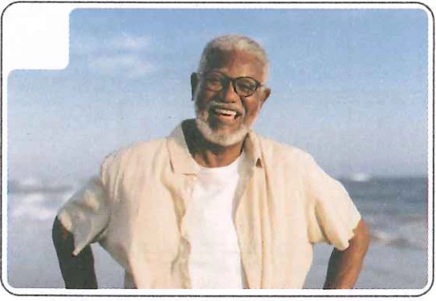
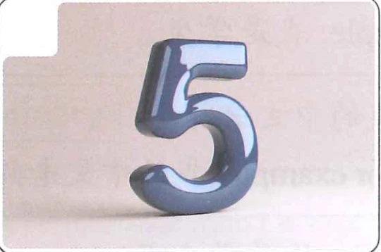
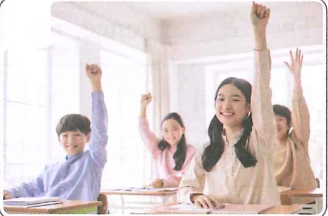
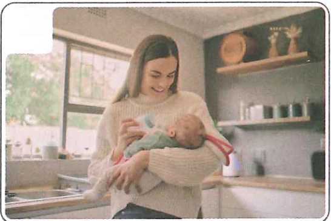
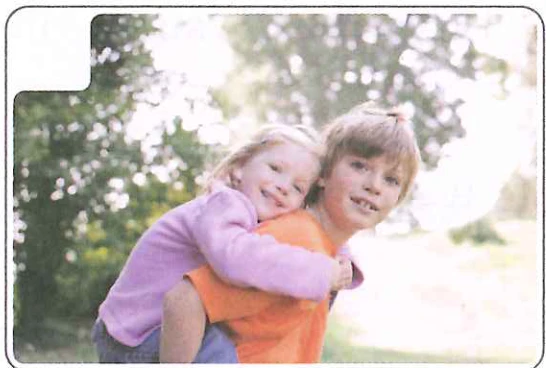

4
Lesson我有两个孩子I have two childrenУ меня двое детей
目标ObjectivesЦели
能听懂并使用“有”字句（1）表达领有人或物品。Be able to understand and use the “有” sentence (1) to express possession of people or objects.Понимать и использовать предложение с “有” (1) для выражения обладания людьми или предметами.
掌握“A……，B呢？”的用法。Master the use of “A……, B呢?”.Освоить использование “A……, B呢?”.
掌握本课数词、量词的用法。Master the use of the numerals and measure words introduced in this lesson.Освоить использование числительных и счетных слов из этого урока.
了解中国人如何问答年龄，能使用合适的词语进行年龄问答。Understand how Chinese people ask and answer about age, and be able to use appropriate words for age-related questions and answers.Понимать, как китайцы задают вопросы о возрасте и отвечают на них, и уметь использовать подходящие слова.
热身Warm-UpРазминка
给下面的词语选择对应的图片。Match the words/phrases with the pictures.Подберите к словам/фразам ниже соответствующие картинки.





A五
B哥哥
C学生
D六十岁
E妈妈
F老师